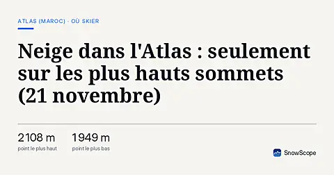
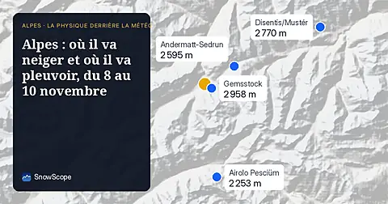
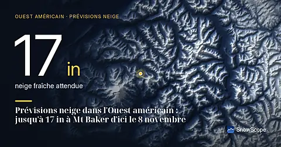
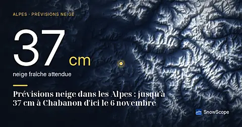

Bulletins neige · Prévisions neige
Des bulletins neige quotidiens pour les skieurs : où est la neige, ce qui arrive et où skier, d'après la carte de neige SnowScope et les stations de mesure. Chaque chiffre vient des données du jour.


Whistler Blackcomb recevra 101 cm de neige nouvelle d'ici le 25 novembre, dépassant largement les normes de début de saison. Mount Cain Alpine Park domine la région avec 132 cm prévus.

Mount Washington Alpine Resort devrait recevoir 359 cm de neige nouvelle au cours des 14 prochains jours, avec les chutes les plus importantes la première semaine. Données du 22 novembre 2026.

Prévisions de neige sur deux semaines pour l'Ouest canadien : Mount Washington Alpine Resort devrait recevoir 202 cm d'ici le 5 décembre, avec les plus fortes chutes le 24 novembre.

Mount Washington Alpine Resort domine avec 76 cm de neige nouvelle prévue au 24 novembre. Données du 21 novembre 2026.

Pas de neige sur les pistes de l'Atlas le 21 novembre. Les hauts sommets conservent 1 cm au maximum. Les trois stations sont à nu ; la prochaine tempête peut prendre des semaines.

Niveau 0 °C dans les Alpes les prochains jours : 1 330–3 210 m. La limite de neige atteint son maximum à 2 900 m le 22 novembre. Risque de pluie sur neige aux stations d'altitude moyenne dimanche 22 novembre.

Quatorze jours de neige nouvelle dans les Alpes du 22 novembre au 5 décembre : les Deux Alpes reçoivent environ 94 cm, dont 73 % dans la première semaine. Données du 21 novembre.

La Pierre Saint-Martin reçoit 18 cm de neige fraîche dans les prochains jours. Les prévisions pour les Pyrénées à partir du 21 novembre montrent la majorité des chutes au-dessus de 1 900 m.

Un mélange de pluie et neige est attendu sur les Pyrénées au cours des trois prochains jours, l'isotherme 0 °C dépassant les sommets des stations dès dimanche. Entre 13 et 24 cm de neige nouvelle prévue en altitude.

Alpe d'Huez recevra le plus de neige dans les Alpes au cours des 72 prochaines heures. Beartooth Basin Summer enregistre les plus fortes chutes de neige fraîche aux États-Unis de l'Ouest et au Canada jusqu'à dimanche.

La neige arrivera aux Pyrénées en deux vagues sur 14 jours, avec 91 cm prévus en altitude. La première semaine apporte 49 % du total ; la semaine 2 reste régulière. Données du 19 novembre.

Combien de neige les montagnes vont-elles gagner ? Notre tableau montre les stations où la prévision annonce le plus de neige fraîche dans les 24 …

Prévisions Canada occidental : 90 cm de neige nouvelle à Mount Washington au cours des deux prochaines semaines, avec 70 cm attendus fin novembre et début décembre.

Les Pyrénées vont accumuler jusqu'à 63 cm de neige nouvelle dans les 14 prochains jours, avec 70 % avant le 25 novembre. Données du 18 novembre.
Prévisions de neige fraîche pour les Alpes jusqu'à début décembre. Saint François Longchamp en tête avec 228 cm attendus sur 14 jours, en commençant par 35 cm jeudi.

Aucune nouvelle neige attendue à Jbel Hebri ou Oukaïmeden au cours des 14 prochains jours. L'Atlas recevra moins de 1 cm au total jusqu'à début décembre, selon les prévisions du 18 novembre.

Orelle domine les prévisions mondiales avec 110 cm en 72 heures. L'Europe domine ; l'Amérique du Nord reste à l'écart. Données du 18 novembre.


96 cm de neige nouvelle prévus aux Arcs sur les trois prochains jours, avec aujourd'hui apportant les chutes les plus importantes ; simulation du 16 novembre.

Orelle a atteint 31 cm le 16 novembre, en hausse de 17 cm en une semaine. Les Alpes devraient recevoir jusqu'à 103 cm de neige supplémentaire d'ici le 19 novembre.

L'Atlas ne retient que 20 km² de neige le 15 novembre, entièrement sur les hauts sommets jusqu'à 4 cm d'épaisseur. Pas de neige aux stations ; aucune n'est prévue jusqu'au 18 novembre.

Prévision de 79 cm de neige nouvelle aux Grands Montets du 16–18 novembre, principalement au-dessus de 2 000 m d'altitude selon la prévision de prévision du 15 novembre.
À Andermatt (2963 m), la prévision donne 75 mm de précipitations du 15 novembre au 20 novembre. Pendant les heures humides, l'isotherme 0 °C se situe

Courmayeur en tête du pronostic avec 88 cm en 72 heures ; l'épaisseur de neige atteint 142 % de la normale pour mi-novembre selon les données du 15 novembre.


Revelstoke, prévisions neige : jusqu'à 10–21 cm attendus d'ici le 16 novembre (Ouest canadien). À Whistler Blackcomb, l'isotherme 0 °C monte entre …

Dévoluy, tendance neige : jusqu'à 24–32 cm possibles d'ici le 16 novembre (Alpes). D'ici le 16 novembre, notre prévision donne 35 cm à Orcières …

La neige se retire vers les plus hauts sommets de l'Atlas. Les trois stations de ski n'ont pas de neige aujourd'hui ; 40 km² de crêtes restent blanches. D'autres fonte en perspective.
Whistler Blackcomb domine une vague de neige sur 72 heures avec 88 cm prévus le 16 novembre 2026. Des chutes importantes sont aussi attendues dans les Alpes et la Sierra Nevada américaine.

Entre 1 380 m et 3 410 m : c'est là que notre prévision place l'isotherme 0 °C dans l'Ouest canadien ces prochains jours. Aux heures les plus douces, …

Prévisions neige Pyrénées sur deux semaines : Gavarnie-Gèdre mène 6 stations avec 36 cm de neige nouvelle d'ici le 26 novembre. Données du 12 novembre.

Saint François Longchamp n'a que 3 cm de neige, soit 12 % de l'enneigement habituel à cette époque, mais 110 cm sont prévus au cours des deux prochaines semaines.

Prévision de neige sur deux semaines pour les stations Atlas montre pratiquement aucune neige nouvelle attendue du 13 au 26 novembre. Les données SnowScope proviennent du 12 novembre.

Bulletin neige dans l'Atlas (Maroc), 12 novembre. Stations de l'Atlas aujourd'hui : pas de neige sur les pentes. De la neige seulement sur les plus …
Bulletin neige dans les Pyrénées, 12 novembre. D'ici le 15 novembre, la prévision apporte 33 cm à Cauterets Cirque du Lys, 29 cm à Piau-Engaly et …

Les Deux Alpes, prévisions neige comparées à la région : 51 cm d'ici le 14 novembre. La surface enneigée est passée de 45 820 km² le 9 novembre à …

Seuls les plus hauts pics retiennent la neige dans l'Atlas aujourd'hui : 20 km² blancs, 6 cm d'épaisseur. Les pistes de ski sont dénudées. Données du 11 novembre.

La Grave domine les Alpes avec 52 cm prévus en 24 heures au 11 novembre ; la neige précoce arrive des semaines avant l'accumulation maximale.

Seulement 8 cm de neige recouvrent les plus hauts sommets de l'Atlas aujourd'hui. Aucune neige dans les stations de ski. La couverture diminue rapidement en mi-novembre.

Piau-Engaly domine la prévision avec 37 cm de neige fraîche d'ici le 13 novembre ; 24 cm sont attendus le 12 novembre.

Whistler Blackcomb en tête avec 53 cm en 72 heures. Prévisions de neige en Europe, aux États-Unis et au Canada le 10 novembre.


Notre prévision met l'isotherme 0 °C dans les Pyrénées entre 2 610 m et 3 840 m dans les jours à venir. Au moment le plus doux de la journée, la …

Whistler Blackcomb a gagné 24 cm en une semaine pour atteindre 50 cm total ; 62 cm supplémentaires prévus en 72 heures alors que des tempêtes majeures frappent les montagnes (données du 8 novembre).
Une tempête océanique humide apporte 92 cm de neige fraîche aux pentes supérieures de Whistler mais de la pluie à la North Shore. Données du 7 novembre.

Limite de neige prévue entre 2 190 et 2 850 m du 8 au 10 novembre. Les pentes hautes reçoivent de la neige ; les vallées restent humides. Données du 7 novembre.

Limite pluie-neige proche de 3 710 m du 8 au 12 novembre : pluie à Oukaïmeden et Imlil, neige au sommet du Toubkal. Carte et graphique.

Environ 192 mm d'eau sur le haut de Whistler du 7 au 12 novembre : l'isotherme 0 °C oscille entre 1 410 et 2 920 m, neige en altitude, pluie plus bas.
D'ici le 10 novembre, notre prévision donne 103 cm à Whistler Blackcomb, 99 cm à Ski Callaghan et 74 cm à Mount Cain Alpine Park. Les chiffres des …

Environ 65 mm sur le Toubkal d'ici le 12 novembre, mais l'isotherme 0 °C reste vers 4 000 m : pluie à Oukaïmeden et dans les vallées, neige au sommet seulement.

Orcières Merlette mène les prévisions des Alpes avec 36 cm de neige nouvelle en trois jours, principalement les 9–10 novembre, selon les données du 7 novembre.

Les stations de ski de l'Atlas n'ont pas de neige aujourd'hui. Seulement 80 km² de terrain blanc subsistent sur les plus hauts pics, avec un maximum de 9 cm. Données du 7 novembre.

Whistler Blackcomb domine avec 103 cm de neige prévus en 72 heures. Orcières Merlette est en tête en Europe avec 36 cm. Données du 6 novembre.

Ski Eldorado prévoit 11 cm de neige fraîche, mais l'isozéro atteint 3 460 m le 6 novembre, retardant l'arrivée de la neige au Nord-Est.
D'ici le 9 novembre, notre prévision donne 74 cm à Whistler Blackcomb, 63 cm à Ski Callaghan et 50 cm à Mount Cain Alpine Park. Les chiffres des …
Oukaimden (Maroc) a la neige la plus épaisse dans l'Atlas (Maroc) aujourd'hui, avec environ 1 cm sur le haut du domaine. Suivent Habri avec 0 cm, …

Prévision Whistler Blackcomb : 74 cm en 72 heures ; les semaines 13, 12, 11 apportent les neiges les plus abondantes de l'année historiquement. Prévision du 5 novembre.

L'Atlas n'a de la neige que au-dessus de 3 000 m aujourd'hui : 60 km² sur les terres les plus élevées, avec 11 cm au maximum. Pas de neige sur les trois stations de ski.

D'ici le 8 novembre, notre prévision donne 17 in (42 cm) à Mt Baker et 5 in (13 cm) à Hurricane Ridge. Les chiffres des stations de ski sont des …
D'ici le 8 novembre, notre prévision donne 94 cm à Whistler Blackcomb, 93 cm à Ski Callaghan et 70 cm à Tweedsmuir Ski Club. Les chiffres des …

Whistler Blackcomb affiche 27 cm le 5 novembre, soit seulement 41 % de la normale pour cette date. Un système majeur apporte 22 cm de neige dans les 24 prochaines heures.

D'ici le 6 novembre, notre prévision donne 37 cm à Chabanon, 34 cm à Dévoluy et 33 cm à Chaillol. Les chiffres des stations de ski sont des …

Chabanon domine les Alpes avec 37 cm prévus en 72 heures. Mt Baker arrive en tête à l'ouest des États-Unis avec 11 po (28 cm). Ski Callaghan mène le Canada avec 33 cm d'ici le 6 novembre.